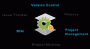

感謝您對「自由軟體鑄造場」的支持與愛護，十多年來「自由軟體鑄造場」受中央研究院支持，並在資訊科學研究所以及資訊科技創新研究中心執行，現已完成階段性的任務。 本網站預計持續維運至 2021年底，網站內容基本上不會再更動。
也紀念我們永遠的朋友 李士傑先生（Shih-Chieh Ilya Li）。
也紀念我們永遠的朋友 李士傑先生（Shih-Chieh Ilya Li）。

Build Your Own Open Source Project
什麼是自由軟體? 如何使用 OpenFoundry?
什麼是自由軟體? 如何使用 OpenFoundry?
最新消息
專案活動
- cnsphone2010 Publish a project news. 2016-08-21
- cnsphone2010 Release a new file. 2016-08-21
- cnsphone2010 Publish a project news. 2016-08-21
- cnsphone2010 Release a new file. 2016-08-21
- cnsphone2010 Publish a project news. 2016-08-20
- cnsphone2010 Release a new file. 2016-08-20
- cnsphone2010 Publish a project news. 2016-08-17
- cnsphone2010 Release a new file. 2016-08-16
- mostcloud104 Release a new file. 2016-08-01
- cnsphone2010 Publish a project news. 2016-05-19
- ricebookshop01 New project just created. 2016-05-03
- demo New project just created. 2016-04-17
- elk New project just created. 2016-04-12
- chichardetector New project just created. 2016-03-16
- nttuismsaccount New project just created. 2016-02-22
近期活動
- 2015-02-14 | 09.30 我的好情人 Vim
- 2015-01-18 | 09.30 學個 Sinatra 好過年
- 2015-01-05 | 18.30 命令列入門：以 Bash Shell 為例
- 2014-12-24 - 2014-12-24 | 12.00 第一次用 PHPUnit 寫測試就上手
- 2014-12-17 - 2014-12-17 | 12.00 高品質軟體的基本動作：如何寫好的程式 (Guidelines in How to Create High-Quality Code)
自由軟體鑄造場 製作 最佳瀏覽狀態：IE7或Firefox2.0以上 (建議使用Firefox) ‧ 解析度1024*768
E-Mail：contact@openfoundry.org Address：台北市南港區研究院路2段128號 中央研究院資訊科學研究所 . 隱私權條款. 使用條款
E-Mail：contact@openfoundry.org Address：台北市南港區研究院路2段128號 中央研究院資訊科學研究所 . 隱私權條款. 使用條款